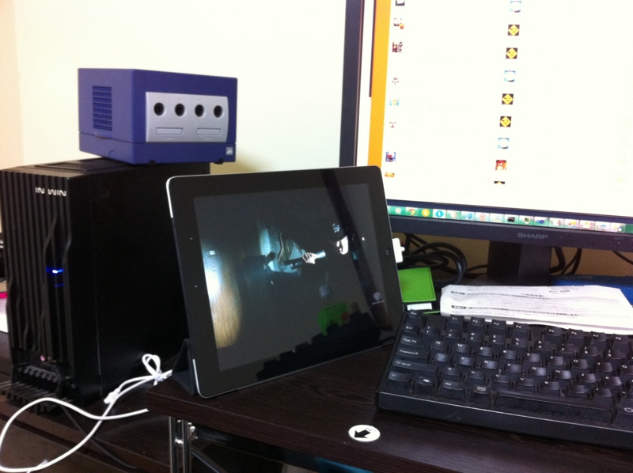

iPad で Hulu を観るの楽しい
執筆日時：

ほかのことしながら、 iPad をサブモニターにして Hulu を観ている。 iPad だと PC の画面を占有しないし、画質の悪さもそれほど気にならない。むしろ綺麗にみえるし、ちょうどよい BGV（BGMじゃなくて！）になる。 Kinoppy と Hulu のおかげで、最近 iPad の利用率がだいぶ高まっている感じ。
その Hulu だが、映画はとりあえずこれまでに『火天の城』と『敦煌』を観た。
『火天の城』は、正直、劇場で1,800円払って観てたらちょっと損したと感じると思う。でも、 Hulu なら惜しくないや。面白いところもあったし。
『敦煌』は少しだけ見て「あっ！これ知ってる！」と思った。たぶん中学生ぐらいのことに原作読んでたハズ。懐かしい。思い出補正があるかもだけど、内容も結構楽しめた。西域って一度でいいから行ってみたい。
『24』（3rd）も少し見たけど、これはながら見ができないな。見たらほかのことできないし、ほかのことしてたら内容がわからなくなる。今度まとめてみたほうがいいかもしれない。
そんなこんなで、まじめに観るというより BGV 的に利用しているので、もっと気軽なコンテンツが増えればいいと思う。バラエティとか、アニメとかね。できたらスポーツやニュースもあればいいのだけど、それはちょっと守備範囲を超えているかな。
ちなみに、日本の Hulu で一番人気の映画は『ふたりエッチ劇場版らしい』。お前らときたら……